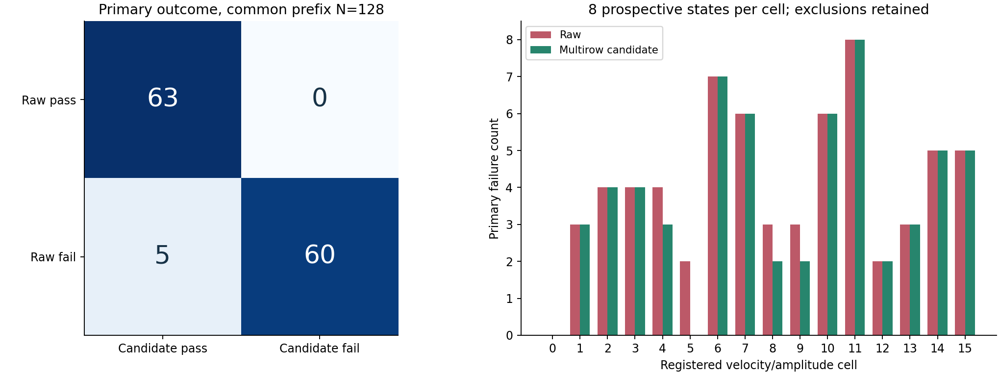
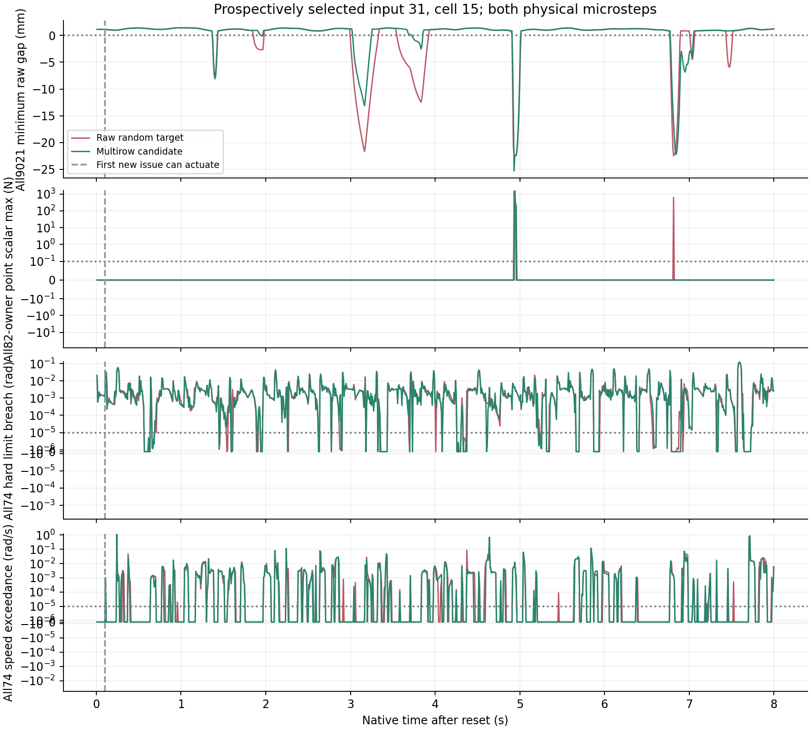
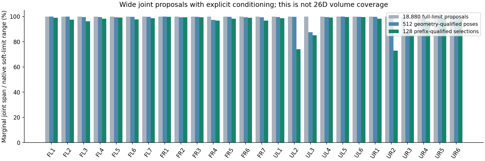
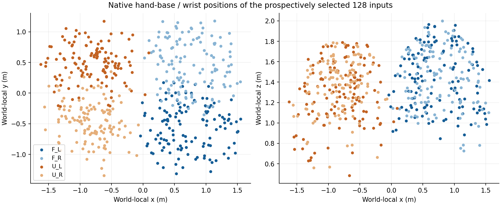
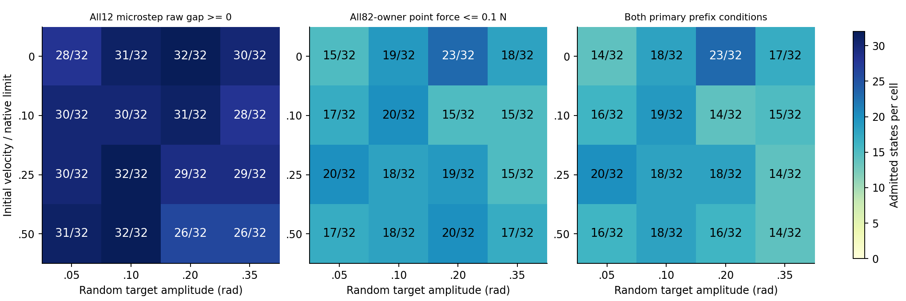
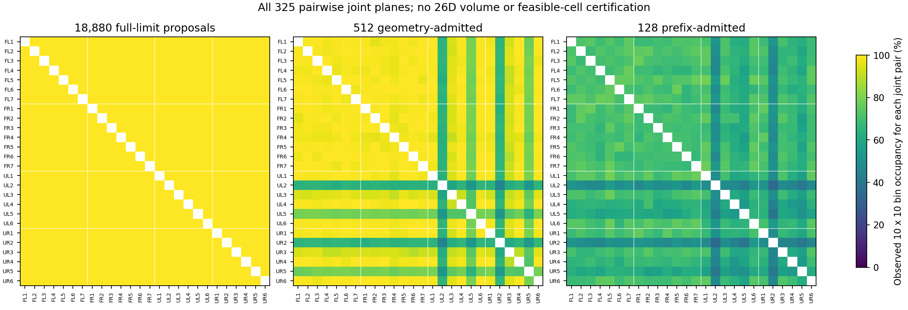

2026-10-09 · 原生 Isaac／PhysX · 前瞻冻结输入 · 配对开发实验
四臂全范围初态随机配对实验
从完整关节范围随机采样，先检查可行初态，再让相同四臂输入分别执行纯随机目标和多行保护候选。所有失败、准入淘汰与随机范围均保留。
完整 System 0 安全验收未通过。 实际配对重放共有 128/128 个初态保持共同初段合格，另 0 个完整保留。主判据失败从 65/128 变为 60/128，修复 5 个，同时新增 0 个失败。 手部／物体／负载／故障空间尚未随机化，本轮没有真实夹持或硬件任务；当前候选也不是新训练的完整 System 0。
18,880
全限位姿态候选
270 / 512
六步物理准入合格
128
16 组合各 8 个输入
65 → 60
共同准入样本的主判据失败
安全效果：同初态、同随机指令、同六槽等待队列
实际配对重放共有 128/128 个初态保持共同初段合格，另 0 个完整保留。主判据失败从 65/128 变为 60/128，修复 5 个，同时新增 0 个失败。 主判据同时要求：每个物理子步的全部 9,021 条原始安全球间隙 ≥ 0，以及四臂 82 个刚体拥有者对精确本环境伙伴的逐点法向力绝对值之和最大值 ≤ 0.1 N。没有对评分距离或接触力应用语义豁免；0.1 N 是本项目实验门槛。
| 方法 | 共同准入分母 | 任一主判据失败 | 95% Wilson 区间 | 几何失败 | 接触力失败 | 全 74 关节硬限位越界 | 速度越界 | 主判据＋关节限位均通过 |
|---|---|---|---|---|---|---|---|---|
| 无保护 | 128 | 65/128 | 42.2%–59.3% | 62 | 44 | 128 | 68 | 0/128 |
| 多行候选 | 128 | 60/128 | 38.4%–55.5% | 57 | 42 | 128 | 67 | 0/128 |
硬限位和速度越界独立保留，额外判断容差均为 10⁻⁵（rad 或 rad/s），不因为主判据通过而宣布完整安全。后续全关节最大硬限位越界：无保护 7.350 rad，候选 9.279 rad。联合抽样判据通过数为无保护 0/128、候选 0/128。联合通过仍不含连续时间、摩擦或硬件保证。 精确配对 McNemar 双侧描述性 p=0.0625；Wilson 区间针对当前条件分布，开发调试和分组比较不构成正式留出集推断。

原生四臂随机操作录像
预先固定 8 个输入，各有无保护／候选两组和俯视、正视、侧视、U 左臂细节四个机位，共 64 段视角录像。视频来自各自评分运行，逐张核对渲染刚体位姿与原生状态。三路整体视角容纳全部 142 个安全球；细节视角仅展示 U 左臂。默认展示预定录像中速度、幅度最高的组合 15，按输入编号取首个；全部录像输入与统计分母保持原登记。
输入 31 · 组合 15 · 重放初段合格。无保护：主判据失败，最小间隙 -22.48 mm，法向峰力 1400.53 N。候选：主判据失败，最小间隙 -25.29 mm，法向峰力 1597.15 N。全74关节硬限位越界峰值（无保护／候选）：0.1246／0.1224 rad；速度超限峰值：1.128／1.111 rad/s。主判据通过也不等于完整安全。
多行保护候选 · 同随机输入

每段 31 张原生画面：第 1 个控制步结束后以及第 16、32、…、480 步结束后。恒定帧率录像约 8.27 秒，帧钟按样本序号排列；首次间隔为 15 步，其余为 16 步。它不定位每次接触峰值，全部原生子步仍单独评分。没有使用画面合成、AI 补帧或其他运行的视频替代。
全部视频与无 JavaScript 播放入口
输入 0 · 组合 0：无保护 top无保护 front无保护 side无保护 detail候选 top候选 front候选 side候选 detail逐子步曲线 SVGPDF

输入 31 · 组合 15：无保护 top无保护 front无保护 side无保护 detail候选 top候选 front候选 side候选 detail逐子步曲线 SVGPDF

输入 101 · 组合 5：无保护 top无保护 front无保护 side无保护 detail候选 top候选 front候选 side候选 detail逐子步曲线 SVGPDF

输入 106 · 组合 10：无保护 top无保护 front无保护 side无保护 detail候选 top候选 front候选 side候选 detail逐子步曲线 SVGPDF

输入 112 · 组合 0：无保护 top无保护 front无保护 side无保护 detail候选 top候选 front候选 side候选 detail逐子步曲线 SVGPDF

输入 191 · 组合 15：无保护 top无保护 front无保护 side无保护 detail候选 top候选 front候选 side候选 detail逐子步曲线 SVGPDF

输入 218 · 组合 10：无保护 top无保护 front无保护 side无保护 detail候选 top候选 front候选 side候选 detail逐子步曲线 SVGPDF

输入 277 · 组合 5：无保护 top无保护 front无保护 side无保护 detail候选 top候选 front候选 side候选 detail逐子步曲线 SVGPDF

随机范围与实际筛选
四臂 26 个受控关节在原生完整软限位中独立均匀采样，种子 1819307463。18,880 个候选中，18,366 个原始几何不合格，514 个达到 0.1 mm 初始余量，取出现顺序的前 512 个。全部 74 个原生关节初值在硬限位内；手部初始限位修正和旧输入均保留。随后执行六个不可撤销的等待控制步、共 12 个物理子步，几何／法向力双准入留下 270 个。
初始速度为原生限值的 0%、10%、25%、50%，随机指令幅度为 0.05、0.10、0.20、0.35 rad，组成 16 个组合；每组合原先有 32 个初态，固定选取其前 8 个准入合格者。指令和速度由不同种子提前生成，26 个指令坐标独立均匀，每 8 个控制步换一次，围绕各自初态并裁剪至软限位。选择不读取后续策略结果。本轮初始速度最高为原生限值的 50%，指令围绕初态最大 ±0.35 rad；75%、100% 初始速度及跨全限位的长距离目标序列尚未覆盖。
128 个选择初态各关节边际跨度为软限位的 73.0%–99.71%。 这是各关节的边际跨度；不能把它等同于 26 维联合体积覆盖率或带障碍物的笛卡尔可达路径。



128 个选择初态在 325 个关节对投影中，每对 10×10 格子的已占格比例为 34%–79%，中位数 68%。 这比单关节跨度更能显示投影采样的稀疏程度；每个占格只说明有样本点，不能证明该格全部可行，更不代表 26 维联合覆盖。

| 组合 | 速度比例 | 指令幅度 rad | 候选 | 准入合格 | 前瞻选择 | 配对重放合格 | 无保护失败 | 候选失败 | 修复／新增失败 |
|---|---|---|---|---|---|---|---|---|---|
| 0 | 0% | 0.05 | 32 | 14 | 8 | 8 | 0 | 0 | 0／0 |
| 1 | 0% | 0.10 | 32 | 18 | 8 | 8 | 3 | 3 | 0／0 |
| 2 | 0% | 0.20 | 32 | 23 | 8 | 8 | 4 | 4 | 0／0 |
| 3 | 0% | 0.35 | 32 | 17 | 8 | 8 | 4 | 4 | 0／0 |
| 4 | 10% | 0.05 | 32 | 16 | 8 | 8 | 4 | 3 | 1／0 |
| 5 | 10% | 0.10 | 32 | 19 | 8 | 8 | 2 | 0 | 2／0 |
| 6 | 10% | 0.20 | 32 | 14 | 8 | 8 | 7 | 7 | 0／0 |
| 7 | 10% | 0.35 | 32 | 15 | 8 | 8 | 6 | 6 | 0／0 |
| 8 | 25% | 0.05 | 32 | 20 | 8 | 8 | 3 | 2 | 1／0 |
| 9 | 25% | 0.10 | 32 | 18 | 8 | 8 | 3 | 2 | 1／0 |
| 10 | 25% | 0.20 | 32 | 18 | 8 | 8 | 6 | 6 | 0／0 |
| 11 | 25% | 0.35 | 32 | 14 | 8 | 8 | 8 | 8 | 0／0 |
| 12 | 50% | 0.05 | 32 | 16 | 8 | 8 | 2 | 2 | 0／0 |
| 13 | 50% | 0.10 | 32 | 18 | 8 | 8 | 3 | 3 | 0／0 |
| 14 | 50% | 0.20 | 32 | 16 | 8 | 8 | 5 | 5 | 0／0 |
| 15 | 50% | 0.35 | 32 | 14 | 8 | 8 | 5 | 5 | 0／0 |
明确保留的安全缺口
新初态全部在原生硬限位内，但等待段中 126／128 个选择样本出现超过 10⁻⁵ rad 的全关节硬限位越界，最大约 0.02228 rad（1.28°），主要发生在手指关节。这一项已在保护策略开始起效前发生，不能只靠球间隙与法向力结果遮盖，也不能视作完整安全合格。
完整运动段还出现更严重的手部异常：输入 246 的 U 左拇指第四关节在控制步索引 276、第一物理子步发生最大越界，候选约 9.28 rad（原生位置约 9.71 rad，原生上限约 0.431 rad）；本轮两组接触峰力均约 25.2 kN。逐点复算通过仅说明记录和计算一致，这些结果本身是明确的安全失败，不能作为可部署的物理安全效果。
执行器模型另外做了 1,024 个零接触观测的原生核对、4 组引擎设置诊断，以及有饱和／限位的顺序响应模型。受控臂位置误差已降到约 1.8–5.6 微弧度，但完整手部位置最大仍约 0.00614 rad，模型门槛未通过，未替换本轮既有候选。名义约束残差也不能作为安全证书。
首批 64 个保护窗口的事后诊断显示：30,720 次指令的内部约束满足标记全部为否，且每次都有当前修正范围内不可满足的约束；运行仍继续下发候选指令。这仅描述首批，不能推算后批。需要同时改进原生手部响应模型、可行指令范围，以及不可行时的处置；当前候选尚未实现严格安全过滤。
本轮共 256 个方法窗口，每窗口 480 个控制步、960 个物理子步，原生时长约 8 秒。16 组合分母均保留，配对重放初段若再失效也保留，绝不补选其他结果。尚需手部停止响应改进、多种子独立验收、物体感知与真实夹持带载、四臂协同任务，以及硬件实验。
原生求解器等待段对照
另外固定原始几何库第一批的全部 64 个初态（包含物理准入淘汰者，不同于上方 128 配对样本），保持原生 74 关节输入、手部目标、速度、驱动参数和六步等待队列一致，只改变四条臂的位置求解迭代次数。每组 6 控制步、12 物理子步；4 组实际退出成功，原生根关节属性读回与逐点复算均通过。
| 位置迭代数 | 硬限位越界初态 | 主准入通过 | 主准入＋关节均通过 | 最大硬限位越界 rad | 全部初态峰力 MN |
|---|---|---|---|---|---|
| 8 | 64/64 | 30/64 | 0/64 | 0.707555 | 2.59 |
| 16 | 61/64 | 30/64 | 3/64 | 0.276630 | 4.35 |
| 32 | 60/64 | 30/64 | 4/64 | 0.047211 | 8.66 |
| 64 | 54/64 | 30/64 | 6/64 | 0.001151 | 17.13 |
峰力列包含未准入失败者；6/64 仅表示该设置下六步等待段的联合抽样通过，不是完整 8 秒运动、夹持任务或硬件的安全通过。提高迭代数降低关节越界，却未提高主准入通过数，还出现更大的未准入峰力，未采用这些参数替换当前配对实验。
可复核证据
全部128配对结果附加关节判据与联合计数说明512完整准入与淘汰账本冻结的配对协议初态预登记随机覆盖指标325对关节二维占格统计64录像编码与全解码核对相机同步验证等待段手部限位问题手部初始硬限位修正记录原始修正字段范围澄清槽位重放误差核对选择库输入哈希随机速度与指令哈希原生配对运行代码原生录像与渲染核对代码独立逐点与FIFO复算代码512准入复算代码首批64配对手部失败定位（事后诊断）首批手部失败定位代码首批64内部约束不可行诊断（事后）页面默认案例与覆盖范围说明随机覆盖作图代码录像编码代码响应模型解析与原生核对4组原生引擎诊断批0 raw 独立复算批0 multirow 独立复算批1 raw 独立复算批1 multirow 独立复算完整128初态与原生速度／随机指令输入原先512全部随机指令配方全部18880姿态提案与原生位置库完整几何筛选计数第二批64配对手部失败定位（事后诊断）第二批手部失败定位代码4组位置求解迭代原生对照结果求解器等待段对照登记4组冻结执行计划原生求解迭代诊断代码求解迭代独立复算代码4组实际执行与退出回执
全部 128 个配对结果
| 输入 | 组合 | 重放准入 | 无保护主判据 | 候选主判据 | 无保护最小间隙 mm | 候选最小间隙 mm | 无保护峰力 N | 候选峰力 N |
|---|---|---|---|---|---|---|---|---|
| 0 | 0 | 合格 | 通过 | 通过 | 0.033 | 0.033 | 0.000 | 0.000 |
| 2 | 2 | 合格 | 通过 | 通过 | 1.484 | 1.487 | 0.000 | 0.000 |
| 4 | 4 | 合格 | 通过 | 通过 | 1.701 | 1.701 | 0.000 | 0.000 |
| 5 | 5 | 合格 | 通过 | 通过 | 1.386 | 1.386 | 0.000 | 0.000 |
| 6 | 6 | 合格 | 失败 | 失败 | -63.212 | -63.882 | 1075.344 | 980.472 |
| 7 | 7 | 合格 | 失败 | 失败 | -53.850 | -53.463 | 880.923 | 996.429 |
| 9 | 9 | 合格 | 通过 | 通过 | 1.001 | 1.001 | 0.000 | 0.000 |
| 11 | 11 | 合格 | 失败 | 失败 | -48.296 | -49.004 | 514.316 | 578.196 |
| 13 | 13 | 合格 | 失败 | 失败 | -23.057 | -22.998 | 92.161 | 54.032 |
| 15 | 15 | 合格 | 失败 | 失败 | -46.629 | -46.550 | 1697.016 | 1793.516 |
| 19 | 3 | 合格 | 通过 | 通过 | 1.167 | 1.174 | 0.000 | 0.000 |
| 20 | 4 | 合格 | 失败 | 失败 | -7.174 | -4.295 | 0.000 | 0.000 |
| 23 | 7 | 合格 | 失败 | 失败 | 1.676 | 1.675 | 284.574 | 281.268 |
| 24 | 8 | 合格 | 通过 | 通过 | 1.645 | 1.645 | 0.000 | 0.000 |
| 26 | 10 | 合格 | 通过 | 通过 | 1.145 | 1.207 | 0.000 | 0.000 |
| 29 | 13 | 合格 | 通过 | 通过 | 1.164 | 1.165 | 0.000 | 0.000 |
| 30 | 14 | 合格 | 失败 | 失败 | -26.248 | -28.878 | 2304.355 | 2374.463 |
| 31 | 15 | 合格 | 失败 | 失败 | -22.480 | -25.295 | 1400.532 | 1597.151 |
| 32 | 0 | 合格 | 通过 | 通过 | 1.783 | 1.783 | 0.000 | 0.000 |
| 40 | 8 | 合格 | 失败 | 失败 | -16.448 | -12.621 | 0.000 | 0.000 |
| 41 | 9 | 合格 | 通过 | 通过 | 0.860 | 0.865 | 0.000 | 0.000 |
| 45 | 13 | 合格 | 失败 | 失败 | -42.384 | -29.586 | 569.649 | 296.802 |
| 47 | 15 | 合格 | 失败 | 失败 | -43.311 | -42.400 | 228.000 | 189.968 |
| 48 | 0 | 合格 | 通过 | 通过 | 0.924 | 0.924 | 0.000 | 0.000 |
| 50 | 2 | 合格 | 失败 | 失败 | -33.780 | -33.558 | 579.535 | 609.408 |
| 51 | 3 | 合格 | 失败 | 失败 | -51.130 | -50.108 | 149.742 | 109.631 |
| 53 | 5 | 合格 | 通过 | 通过 | 1.103 | 1.103 | 0.000 | 0.000 |
| 56 | 8 | 合格 | 失败 | 失败 | -1.157 | -1.157 | 0.000 | 0.000 |
| 57 | 9 | 合格 | 失败 | 失败 | -5.303 | -5.213 | 1082.525 | 1081.239 |
| 61 | 13 | 合格 | 失败 | 失败 | -18.491 | -16.676 | 0.000 | 0.000 |
| 66 | 2 | 合格 | 失败 | 失败 | -26.605 | -24.017 | 1547.334 | 1539.110 |
| 67 | 3 | 合格 | 通过 | 通过 | 1.610 | 1.619 | 0.000 | 0.000 |
| 68 | 4 | 合格 | 失败 | 通过 | -4.592 | 1.691 | 0.000 | 0.000 |
| 73 | 9 | 合格 | 失败 | 通过 | -0.738 | 0.086 | 0.000 | 0.000 |
| 74 | 10 | 合格 | 失败 | 失败 | -17.798 | -17.693 | 272.019 | 320.307 |
| 78 | 14 | 合格 | 失败 | 失败 | -29.007 | -28.302 | 265.822 | 174.371 |
| 79 | 15 | 合格 | 失败 | 失败 | -29.016 | -28.671 | 640.523 | 577.507 |
| 81 | 1 | 合格 | 通过 | 通过 | 1.147 | 1.147 | 0.000 | 0.000 |
| 85 | 5 | 合格 | 通过 | 通过 | 1.111 | 1.112 | 0.000 | 0.000 |
| 86 | 6 | 合格 | 失败 | 失败 | -0.607 | -0.610 | 0.000 | 0.000 |
| 87 | 7 | 合格 | 失败 | 失败 | -5.155 | -4.431 | 1084.246 | 509.064 |
| 91 | 11 | 合格 | 失败 | 失败 | -32.673 | -31.883 | 276.405 | 290.524 |
| 92 | 12 | 合格 | 失败 | 失败 | -2.907 | -0.278 | 0.000 | 503.462 |
| 93 | 13 | 合格 | 通过 | 通过 | 1.551 | 1.552 | 0.000 | 0.000 |
| 94 | 14 | 合格 | 通过 | 通过 | 0.948 | 0.961 | 0.000 | 0.000 |
| 96 | 0 | 合格 | 通过 | 通过 | 0.859 | 0.859 | 0.000 | 0.000 |
| 98 | 2 | 合格 | 失败 | 失败 | -20.427 | -18.753 | 129.526 | 0.000 |
| 101 | 5 | 合格 | 通过 | 通过 | 0.988 | 0.995 | 0.000 | 0.000 |
| 102 | 6 | 合格 | 失败 | 失败 | -25.967 | -25.832 | 962.090 | 1086.625 |
| 103 | 7 | 合格 | 通过 | 通过 | 1.423 | 1.429 | 0.000 | 0.000 |
| 105 | 9 | 合格 | 失败 | 失败 | -17.056 | -14.015 | 131.715 | 0.000 |
| 106 | 10 | 合格 | 通过 | 通过 | 0.937 | 0.979 | 0.000 | 0.000 |
| 107 | 11 | 合格 | 失败 | 失败 | -23.371 | -24.965 | 972.567 | 1143.485 |
| 108 | 12 | 合格 | 通过 | 通过 | 1.024 | 1.026 | 0.000 | 0.000 |
| 112 | 0 | 合格 | 通过 | 通过 | 1.301 | 1.301 | 0.000 | 0.000 |
| 114 | 2 | 合格 | 通过 | 通过 | 1.232 | 1.240 | 0.000 | 0.000 |
| 116 | 4 | 合格 | 通过 | 通过 | 1.601 | 1.601 | 0.000 | 0.000 |
| 119 | 7 | 合格 | 失败 | 失败 | -42.321 | -33.645 | 2087.647 | 2079.376 |
| 120 | 8 | 合格 | 通过 | 通过 | 1.178 | 1.178 | 0.000 | 0.000 |
| 121 | 9 | 合格 | 通过 | 通过 | 1.030 | 1.030 | 0.000 | 0.000 |
| 122 | 10 | 合格 | 失败 | 失败 | -48.076 | -50.317 | 91.050 | 44.212 |
| 124 | 12 | 合格 | 失败 | 失败 | -8.788 | -4.991 | 28.386 | 0.000 |
| 125 | 13 | 合格 | 通过 | 通过 | 1.488 | 1.490 | 0.000 | 0.000 |
| 128 | 0 | 合格 | 通过 | 通过 | 1.125 | 1.125 | 0.000 | 0.000 |
| 129 | 1 | 合格 | 通过 | 通过 | 0.998 | 1.002 | 0.000 | 0.000 |
| 130 | 2 | 合格 | 通过 | 通过 | 1.310 | 1.312 | 0.000 | 0.000 |
| 132 | 4 | 合格 | 失败 | 失败 | -8.491 | -5.874 | 0.000 | 0.000 |
| 135 | 7 | 合格 | 失败 | 失败 | -33.080 | -33.090 | 3986.609 | 6685.778 |
| 136 | 8 | 合格 | 通过 | 通过 | 1.398 | 1.659 | 0.000 | 0.000 |
| 137 | 9 | 合格 | 通过 | 通过 | 1.721 | 1.721 | 0.000 | 0.000 |
| 140 | 12 | 合格 | 通过 | 通过 | 1.156 | 1.156 | 0.000 | 0.000 |
| 141 | 13 | 合格 | 通过 | 通过 | 0.859 | 0.859 | 0.000 | 0.000 |
| 142 | 14 | 合格 | 通过 | 通过 | 1.421 | 1.420 | 0.000 | 0.000 |
| 143 | 15 | 合格 | 通过 | 通过 | 1.108 | 1.117 | 0.000 | 0.000 |
| 144 | 0 | 合格 | 通过 | 通过 | 1.773 | 1.774 | 0.000 | 0.000 |
| 145 | 1 | 合格 | 通过 | 通过 | 1.785 | 1.785 | 0.000 | 0.000 |
| 146 | 2 | 合格 | 失败 | 失败 | -22.418 | -22.418 | 1145.567 | 689.798 |
| 147 | 3 | 合格 | 失败 | 失败 | -53.701 | -50.887 | 2192.176 | 676.765 |
| 148 | 4 | 合格 | 失败 | 失败 | -1.921 | -1.921 | 0.000 | 0.000 |
| 150 | 6 | 合格 | 通过 | 通过 | 1.677 | 1.687 | 0.000 | 0.000 |
| 151 | 7 | 合格 | 失败 | 失败 | -41.315 | -29.308 | 1052.160 | 983.159 |
| 152 | 8 | 合格 | 通过 | 通过 | 1.183 | 1.183 | 0.000 | 0.000 |
| 153 | 9 | 合格 | 通过 | 通过 | 0.812 | 0.812 | 0.000 | 0.000 |
| 156 | 12 | 合格 | 通过 | 通过 | 1.109 | 1.110 | 0.000 | 0.000 |
| 157 | 13 | 合格 | 通过 | 通过 | 1.210 | 1.212 | 0.000 | 0.000 |
| 158 | 14 | 合格 | 通过 | 通过 | 0.859 | 0.859 | 0.000 | 0.000 |
| 162 | 2 | 合格 | 通过 | 通过 | 0.958 | 0.970 | 0.000 | 0.000 |
| 163 | 3 | 合格 | 失败 | 失败 | -38.002 | -38.114 | 863.176 | 821.708 |
| 164 | 4 | 合格 | 通过 | 通过 | 0.737 | 0.741 | 0.000 | 0.000 |
| 165 | 5 | 合格 | 失败 | 通过 | -9.069 | 1.630 | 0.000 | 0.000 |
| 167 | 7 | 合格 | 通过 | 通过 | 1.588 | 1.598 | 0.000 | 0.000 |
| 168 | 8 | 合格 | 失败 | 通过 | -9.480 | 1.503 | 0.000 | 0.000 |
| 171 | 11 | 合格 | 失败 | 失败 | -27.285 | -26.097 | 2792.726 | 2665.034 |
| 172 | 12 | 合格 | 通过 | 通过 | 1.804 | 1.804 | 0.000 | 0.000 |
| 174 | 14 | 合格 | 失败 | 失败 | -21.073 | -13.124 | 0.000 | 0.000 |
| 180 | 4 | 合格 | 通过 | 通过 | 1.830 | 1.830 | 0.000 | 0.000 |
| 181 | 5 | 合格 | 通过 | 通过 | 1.308 | 1.308 | 0.000 | 0.000 |
| 182 | 6 | 合格 | 失败 | 失败 | -5.795 | -5.644 | 0.000 | 0.000 |
| 184 | 8 | 合格 | 通过 | 通过 | 1.745 | 1.745 | 0.000 | 0.000 |
| 186 | 10 | 合格 | 失败 | 失败 | -19.546 | -18.494 | 599.691 | 576.655 |
| 188 | 12 | 合格 | 通过 | 通过 | 1.014 | 1.014 | 0.000 | 0.000 |
| 190 | 14 | 合格 | 失败 | 失败 | -7.395 | -6.653 | 544.654 | 161.283 |
| 191 | 15 | 合格 | 通过 | 通过 | 1.222 | 1.250 | 0.000 | 0.000 |
| 192 | 0 | 合格 | 通过 | 通过 | 1.736 | 1.736 | 0.000 | 0.000 |
| 193 | 1 | 合格 | 失败 | 失败 | -4.928 | -3.531 | 0.000 | 0.000 |
| 197 | 5 | 合格 | 失败 | 通过 | -8.035 | 1.645 | 0.000 | 0.000 |
| 198 | 6 | 合格 | 失败 | 失败 | -3.904 | -2.799 | 0.000 | 0.000 |
| 202 | 10 | 合格 | 失败 | 失败 | -13.242 | -13.014 | 0.000 | 0.000 |
| 203 | 11 | 合格 | 失败 | 失败 | -21.606 | -21.289 | 2677.400 | 2408.789 |
| 206 | 14 | 合格 | 失败 | 失败 | 1.360 | 1.364 | 25198.513 | 25198.513 |
| 207 | 15 | 合格 | 失败 | 失败 | -73.991 | -73.790 | 933.006 | 875.590 |
| 211 | 3 | 合格 | 通过 | 通过 | 1.294 | 1.291 | 0.000 | 0.000 |
| 218 | 10 | 合格 | 失败 | 失败 | -32.084 | -26.265 | 131.705 | 134.576 |
| 220 | 12 | 合格 | 通过 | 通过 | 1.594 | 1.594 | 0.000 | 0.000 |
| 225 | 1 | 合格 | 失败 | 失败 | -3.542 | -3.426 | 0.000 | 0.000 |
| 234 | 10 | 合格 | 失败 | 失败 | -23.774 | -23.757 | 848.906 | 708.083 |
| 241 | 1 | 合格 | 通过 | 通过 | 1.715 | 1.715 | 0.000 | 0.000 |
| 246 | 6 | 合格 | 失败 | 失败 | -18.183 | -18.041 | 740.460 | 6876.216 |
| 255 | 15 | 合格 | 通过 | 通过 | 1.004 | 1.014 | 0.000 | 0.000 |
| 257 | 1 | 合格 | 失败 | 失败 | -13.818 | -3.017 | 0.000 | 0.000 |
| 259 | 3 | 合格 | 通过 | 通过 | 1.709 | 1.708 | 0.000 | 0.000 |
| 273 | 1 | 合格 | 通过 | 通过 | 1.800 | 1.800 | 0.000 | 0.000 |
| 275 | 3 | 合格 | 失败 | 失败 | -48.813 | -33.708 | 2063.925 | 1394.788 |
| 277 | 5 | 合格 | 通过 | 通过 | 1.619 | 1.619 | 0.000 | 0.000 |
| 299 | 11 | 合格 | 失败 | 失败 | -33.854 | -33.863 | 2546.698 | 5307.464 |
| 310 | 6 | 合格 | 失败 | 失败 | -24.626 | -16.819 | 0.000 | 0.000 |
| 315 | 11 | 合格 | 失败 | 失败 | 1.647 | 1.654 | 3378.299 | 3116.069 |
| 331 | 11 | 合格 | 失败 | 失败 | -51.050 | -51.538 | 7022.623 | 11866.443 |
大体量原始逐点／9,021 行距离流保留在原始登记目录；本页提供派生指标、独立复算、完整初态选择账本、冻结输入、代码和原生录像。几何准入和物理准入使样本服从条件分布；这组开发实验不能推广为任意场景的安全保证。